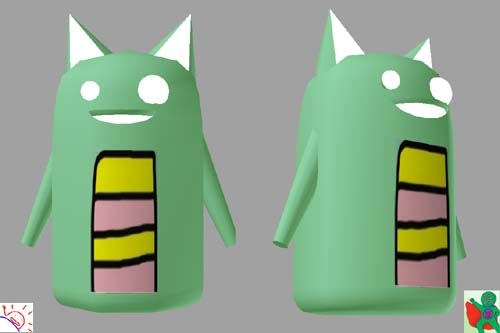
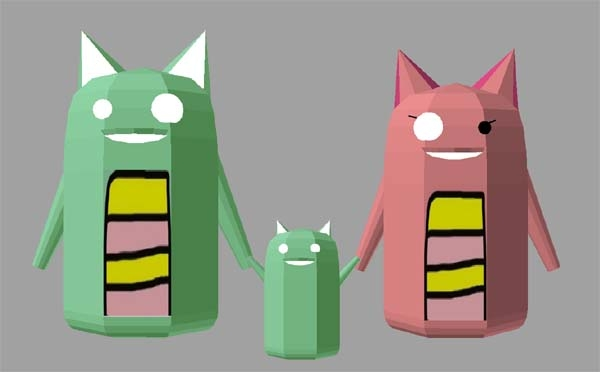

あのだるやなぎが、ついに3Dに！
公開日：

すごい、すごい！ うちの Twitter のアイコンが 3D になったよ！
昔、「六角大王」で挫折したので、こういうのはスゴい尊敬してしまう。ありがとう！
ただ、右下になぜウェブマトリクスマン（Twitter）がいるのかは気にしないでおく。
@daruyanagi @kirin_nico なんですか脚というのは飾りらしいです。それが偉い人にはわからんらしいのです。 pic.twitter.com/aUIgbxe1
PS: なんか子供までできたし！
